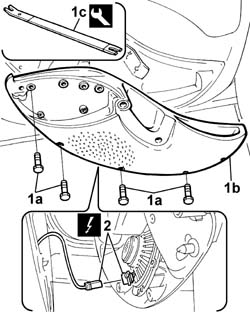

7005E30 object pouch on one front side door r r
- Path
- Procedures > 70 FITTINGS > 7005 PASSENGER COMPARTMENT FRONT SIDE DOORS > 7005E front side door trim > 7005E30 object pouch on one front side door r r
- Kind
- repair procedure (removal / refitting; the operation number is the code)
- Applies to
- all engines; all production periods
- Interactive page
- https://sloeber94.github.io/elrnDB-fDbl/en/#/2585012
Applies to: all engines; all production periods; only with equipment: Doblò trim level
 Removing
Removing
 Refitting
RefittingDisconnect the battery negative terminal.
Op. 7005E18 FRONT SIDE DOOR ARMREST - R.R.
Op. 7005E38 FRONT SIDE DOOR INTERIOR HANDLE- R.R.
1. Undo the bolts (1a) and prise off the storage pouch (1b) from the fixing studs, using the tool (1c).
 | Name | Country |
|---|---|---|
1c | Scraper blade | 1.878.077.000 |
2. Disconnect the loudspeaker's electrical connection.
Name | Connector | |
|---|---|---|
2 | Speaker in left front door |
Name | Connector | |
|---|---|---|
2 | Speaker in right front door |

Applies to: all engines; all production periods; only with equipment: Doblò trim level
Refitting
RemovingConnect the loudspeaker's electrical connection.
 | Name | Connector |
|---|---|---|
- | Speaker in left front door |
| Name | Connector |
|---|---|---|
- | Speaker in right front door |
Fit the storage pouch, fitting the studs in their seatings.
Tighten the bolts securing the storage pouch.
Op. 7005E38 FRONT SIDE DOOR INTERIOR HANDLE- R.R.
Op. 7005E18 FRONT SIDE DOOR ARMREST - R.R.
Connect the battery negative terminal.
Topics linked from this page (4)
- 7005E18 front side door arm rest r r
- 7005E38 front side door interior handle-r r
- P35 SPEAKER IN LEFT FRONT DOOR
- P036 SPEAKER IN PASSENGER FRONT DOOR